| |
|
GERÇEK ZAMANLI GPS İLE ÇALIŞMA
|
|
Genel Bilgiler 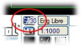Bir GPS ile çalışmak için, her ikisinin de koordinatlarının birbiriyle tutarlı olması amacıyla haritanın ve GPS'in koordinat referans sistemleri ayarlanmalıdır. Bunun için Ayarlar → Koordinat Referans Sistemi… menüsüne veya ISTRAM®/ISPOL® ekranının sol alt kısmında bulunan ilgili simgeye tıklanmalıdır.
Ardından Araçlar → Yardımcı Araçlar→ GPS ile Bağlantı seçeneğine veya GPS araç çubuğundaki  düğmesine basılarak bu cihazla çalışılır. düğmesine basılarak bu cihazla çalışılır.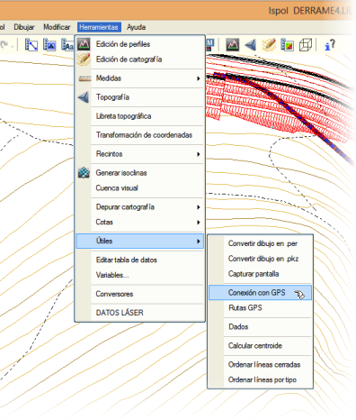
 Bu, GPS ile çalışma parametrelerinin tanımlandığı bir menüye yol açar. Bu menünün iki çalışma modu vardır: Bu, GPS ile çalışma parametrelerinin tanımlandığı bir menüye yol açar. Bu menünün iki çalışma modu vardır:
Çalışma modu Yapılandırma Bu menüde şunları tanımlamak önemlidir:
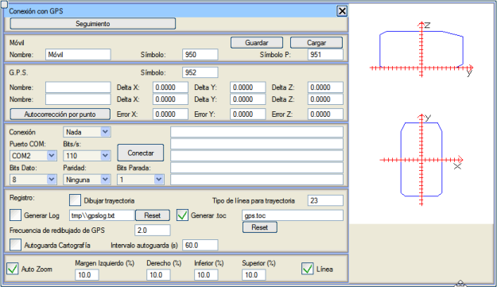
Ayrıca Takip moduna geçmeyi sağlayan bir düğme de bulunur. Bu iletişim kutusu kapatılırsa, HARİTA pencerelerindeki GPS bağlantı ve görüntüleme durumu değişmez. GPS Tanımı Bu menüyle çalışabilmek için, programın bağlanacağı GPS cihazlarını tanımlamak gerekir. Bunun için iletişim kutusunun G.P.S. alanı kullanılır. Normalde GPS anteni, yerdeki bir noktanın koordinatlarını hesaplamak için yere sıfır veya yarı gömülü değildir, bunun yerine bir araca veya anteni destekleyen bir jalon üzerine sabitlenmiştir. Menünün bu alanında, antenin ölçülmek istenen noktaya göre göreli konumu tanımlanır. Yine de, bu tür bir düzeltmenin GPS cihazının kendisinde yapılandırılması ve bu menüde yapılmasına gerek olmaması yaygındır. 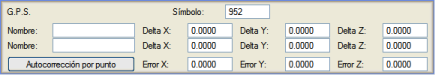İki GPS cihazı tanımlama imkanı vardır, her biri bir Ad, Delta X, Delta Y ve Delta Z seçenek satırında. Bir GPS ile çalışıldığının kabul edilmesi için satırlardan birine en az bir veri girilmelidir. Örneğin, antenin ölçüm alım noktasını yerden 2 metre yüksekliğe yerleştiren bir jalon (direk) ile, birinci veya ikinci GPS'in Delta Z değerini 2 olarak doldurmak yeterli olacaktır. Bir değer girildiğinde, GPS'e otomatik olarak bir ad verilir, varsayılan olarak GPS1. Bu ad, kullanıcının istediği başka bir adla değiştirilebilir. Eğer doldurulan ilk veri GPS'in kendi adıysa, otomatik olarak herhangi bir varsayılan değerle değiştirilmez. Hata alanları, GPS ölçümlerinde gözlemlenebilen sistematik bir hatayı ifade eder, öyle ki cihaz tarafından yapılan okumalar da bu değerlere göre düzeltilir. [Noktaya göre otomatik düzeltme] düğmesi, GPS'in bulunduğu haritadaki noktayı seçerek (genellikle bir tür yakalama modu etkinleştirilmişken) bu alanları otomatik olarak doldurmayı sağlar. 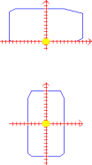Bir GPS tanımlandığında, bu menünün sağındaki grafiklerde sarı bir nokta belirir. Bu grafikler, GPS antenini tutan yapıyı temsil eden sembollerdir (kullanıcı tarafından sembol editöründe değiştirilebilir). Sarı nokta, menüde belirtilen göreli koordinatlara göre her sembolün koordinat başlangıcına göre yerleştirilir. Menünün G. P. S. alanındaki Sembol alanı, GPS cihazının antenini temsil etmek için hangi sembolün kullanılacağını belirtmeyi sağlar (varsayılan olarak S950). Menünün Mobil alanındaki Sembol ve Sembol P (profil sembolü) seçenekleri, GPS antenini tutan ve ölçülmek istenen noktaya yerleştirilecek yapıyı temsil etmek için hangi sembollerin kullanılacağını belirtmeyi sağlar. Bu yapının bir plan ve bir profil şeması tanımlanabilir. Mobil alanında, bu menünün yapılandırmasının açıklayıcı bir adı da belirtilebilir ve bu yapılandırmayı kaydetmeye ve yüklemeye olanak tanıyan iki düğme vardır. Son kaydedilen veya yüklenen yapılandırma, ISTRAM®/ISPOL® bir sonraki başlatıldığında varsayılan yapılandırma olarak kullanılacaktır. GPS yapılandırmasını kaydetmek, sadece bir GPS kullanmak istediğinizde her seferinde yapmak zorunda kalmamak için değil, aynı zamanda GPS araç çubuğundaki  bağlantı düğmesinden doğrudan bağlantıya da olanak tanır. bağlantı düğmesinden doğrudan bağlantıya da olanak tanır.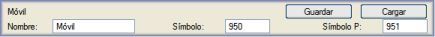
GPS ile Bağlantı Bluetooth, USB veya seri port aracılığıyla, GPS cihazı bilgisayara bağlanmalı ve iletişim için bir COM portu kullanılabilir bırakmalıdır. Bağlantı alanında, ISTRAM®/ISPOL®'ün erişmesi gereken portların yapılandırması ve cihazlarla bağlantı durumu yönetilir.  G.P.S. alanında bir GPS tanımlandığında, bu alanın cihaz seçicisine otomatik olarak eklenir. İki GPS bağlı olsa ve her ikisi de haritada ve diğer pencerelerde gösterilse bile, sadece o seçicide etkin olan GPS'ten koordinatlar alınacaktır. Bağlantıyı yönetmek için kullanılabilecek değerler COM portu, bağlantı hızı, veri bitleri, parite ve duruş bitleridir. [Bağlan] düğmesi ile ISTRAM®/ISPOL® ile GPS cihazı arasında bağlantı kurulur. Bu alanın sağında, cihazdan alınan bilgilerin gösterileceği boş satırlar bulunur. Aşağıdaki resimde, GPS 1 olarak adlandırılan, uygun jalon üzerine yerleştirildiğinde yerden 2 metre yükseklikte bir antene sahip bir GPS cihazının yapılandırıldığı bir örnek gösterilmektedir. Bu cihaz COM2 portuna, 38400 bit/s hızında, 8 veri biti, paritesiz ve 1 duruş biti ile bağlanır (COM2, 38400, 8/N/1). Ayrıca alınan GGA ve GST komutları da gösterilmektedir. 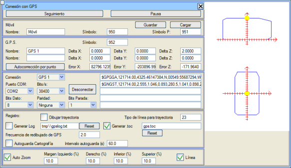 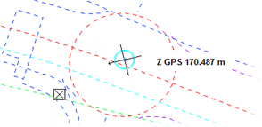Bağlantı sırasında, [Bağlan] düğmesi (veya simgesi) [Bağlantıyı Kes] (simge  ) olarak değişir ve menünün üst kısmında [Duraklat] düğmesi belirir. Bu düğmeye (veya ) olarak değişir ve menünün üst kısmında [Duraklat] düğmesi belirir. Bu düğmeye (veya  simgesine) basıldığında, aynı yeri kaplayan [Devam Et] düğmesiyle değişir ve bağlantıyı kaybetmeden GPS cihazına olan ilgiyi yönetirler. simgesine) basıldığında, aynı yeri kaplayan [Devam Et] düğmesiyle değişir ve bağlantıyı kaybetmeden GPS cihazına olan ilgiyi yönetirler.GPS'e dikkat edilirken, harita pencerelerinde resimdeki gibi bir sembol belirir ve her an GPS'in konumunu gösterir. GPS Aktivite Kaydı Son olarak, Kayıt alanında, GPS'in bulunduğu tüm konumları birleştiren belirtilen tipte bir çizginin çizilmesi (alınan koordinatların nasıl yönetildiğinden bağımsız olarak), yani iz yolunun etkinleştirilmesi mümkündür. İstenirse, GPS'in tüm aktivitesini içeren bir "log" dosyası ve ISTRAM®/ISPOL® ile çalışmak için dikkate alınan tüm GPS konum koordinatlarının kaydedildiği bir .toc formatında bir dosya da oluşturulabilir. [Sıfırla] düğmeleri, 'log' dosyasını veya .toc dosyasını sıfırlamayı sağlar. 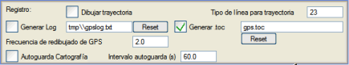 Yeniden çizimin çok yavaş olduğu durumlar için saniyede maksimum yeniden çizim sıklığı belirtilebilir. Eğer Haritayı otomatik kaydet seçeneği etkinleştirilirse, program haritayı belirtilen aralığa göre otomatik olarak kaydeder. Otomatik Yakınlaştırma Menünün bu alanında, GPS mevcut görünümden her çıktığında, programın harita görünümünü otomatik olarak GPS konumuna ortalaması ayarlanabilir. Eğer kenar boşlukları (%) olarak ayarlanırsa, o zaman bu otomatik kaydırma, GPS'in konumunun görünümden 'çıkmasını' beklemek yerine bu kenar boşluklarına ulaştığında gerçekleşir. Çizgi seçeneği etkinleştirildiğinde, ekranda bu kenar boşlukları gösterilir. 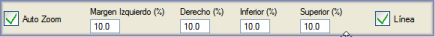
Çalışma modu Takip Bu modda, ISTRAM®/ISPOL®'ün kullanıcıya GPS'in konumu ve durumu hakkında göstereceği bilgiler yapılandırılır. 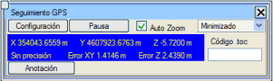Takip modunda, GPS ile çalışma menüsü, tüm çalışma penceresini kullanıcıya bırakmak amacıyla en aza indirilir. [Yapılandırma] düğmesi, Yapılandırma moduna geri döner veya geçer. [Duraklat] / [Devam Et] düğmeleri, GPS cihazına olan ilgiyi yönetir (bağlantıyı kaybetmeden) ve  düğmesi menüyü gizler. düğmesi menüyü gizler.Mavi bir kutu içinde aktif GPS'in temel bilgileri (konum, hassasiyet ve hata) gösterilir. Bu bilgi, GPS'in gönderdiği verilerin her doğru okumasında, her "epokta" güncellenir. Otomatik Yakınlaştırma seçeneği, yapılandırmada ayarlananla aynıdır. .toc kodu, eğer GPS yapılandırmasının aktivite kaydı bölümünde bu dosyanın oluşturulması belirtilmişse, .toc dosyasının her satırına eklenen metindir. Bu kod, kullanıcının istediği herhangi bir zamanda değiştirilebilir ve bu kod değiştirilene kadar o dosyanın sonraki verileriyle birlikte gönderilir. 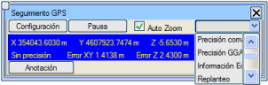[Not] düğmesi, kullanıcının GPS'ten almak istediği bilgileri özel bir notlar dosyasına kaydetmesini sağlar. Öte yandan, bir seçici, bu menünün bu modda nasıl gösterileceğini ve GPS sembolünün haritada nasıl gösterileceğini yapılandırmayı sağlar. Bu seçici aşağıdaki seçenekleri sunar:
Komuta Göre Hassasiyet 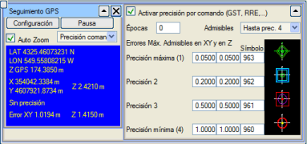Bu seçeneği seçtiğinizde, GPS araç çubuğundaki  simgesi aracılığıyla da erişilebilen, resimdekine benzer bir menü görüntülenir. Eğer
GPS cihazı GST veya RRE komutları gönderiyorsa, bu varsayılan hassasiyet yönetim sistemidir ve menünün üst kısmındaki kutucukta işaretli olarak görünür. simgesi aracılığıyla da erişilebilen, resimdekine benzer bir menü görüntülenir. Eğer
GPS cihazı GST veya RRE komutları gönderiyorsa, bu varsayılan hassasiyet yönetim sistemidir ve menünün üst kısmındaki kutucukta işaretli olarak görünür.4 hassasiyet türü ve her biri için XY ve Z'de izin verilen maksimum hatalar tanımlanır. Her hassasiyet türü için, harita pencerelerinde GPS konumunda gösterilecek bir sembol belirtilir. GPS'in döndürdüğü değerleri kabul etmeye başlamak için gerekli olan, uygun hassasiyete sahip epok sayısı ayarlanır. Eğer bu sayı 0 ise tüm okumalar kabul edilir, 1 veya daha büyükse (50'ye kadar) sadece kabul edilebilir bir hassasiyete sahip okumalar kabul edilir. Kabul edilebilir hassasiyetler maksimum veya maksimumdan 2, 3 veya 4'e kadar olabilir. Kabul edilen epok sayısı, GPS'in konumu izin verilen maksimum hatadan daha büyük bir mesafede değiştiğinde 0'a sıfırlanır. Kullanılan epok sayısı 1'den büyük olduğunda, GPS'in konumu ve hatası olarak son n kabul edilen epokun konumlarının ve hatalarının ortalaması alınır. GGA Hassasiyeti GST veya RRE komutları mevcut değilse, bu hassasiyet yönetim sistemi kullanılabilir. Burada hassasiyet değerlendirmeleri GPS cihazı üreticisine bağlıdır. İşleyiş, önceki hassasiyet türüne benzer: 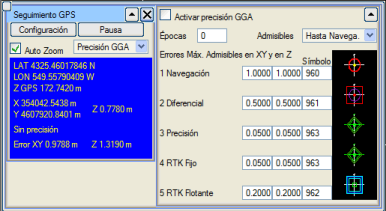
Yankı Bilgisi Bu seçenekte, GPS araç çubuğundaki  simgesi aracılığıyla da erişilebilen,
yapılan hesaplamalardan bağımsız olarak ekranda hangi metinsel bilgilerin gösterileceği belirtilir. simgesi aracılığıyla da erişilebilen,
yapılan hesaplamalardan bağımsız olarak ekranda hangi metinsel bilgilerin gösterileceği belirtilir.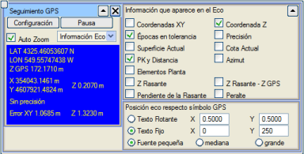
Programın sunduğu olanaklar şunlardır:
Veriler renk gruplarına ayrılarak gösterilir, bu da okunmalarını kolaylaştırır. Bu pencerenin konumu, kullanıcı tarafından piksel cinsinden belirtilen pencere koordinatlarına göre sabit veya GPS sembolünün görünür boyutuna orantılı değerlerle GPS sembolünün konumuna göreli olabilir. Veriler sırayla üç farklı yazı tipi boyutunda gösterilebilir: küçük, orta veya büyük. 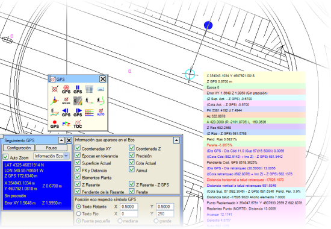
Aplikasyon Bu seçenekte, GPS sembolüne eşlik edecek metinsel bilgiler, belirli aplikasyonlar yapmak amacıyla belirtilir:
EKSEN İÇİN APLİKASYON Çalışılan eksenin noktalarını, enkesitlerini veya yüzeylerini aplike etmek için kullanılırlar ve ayrıca GPS araç çubuğundaki  simgesi aracılığıyla da erişilir. Bu aplikasyonlar sadece BOYKESİT ortamında uygulanabilir. simgesi aracılığıyla da erişilir. Bu aplikasyonlar sadece BOYKESİT ortamında uygulanabilir.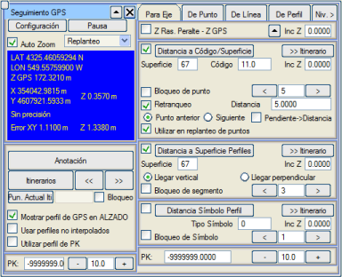
NOKTA APLİKASYONU GPS araç çubuğundaki  simgesi aracılığıyla da erişilebilen bu seçenek, Kuzey, bir baz istasyonu veya aplikasyon için seçilen önceki noktayı referans alarak noktaları aplike etmeyi sağlar. Herhangi bir ortamda kullanılabilir. simgesi aracılığıyla da erişilebilen bu seçenek, Kuzey, bir baz istasyonu veya aplikasyon için seçilen önceki noktayı referans alarak noktaları aplike etmeyi sağlar. Herhangi bir ortamda kullanılabilir.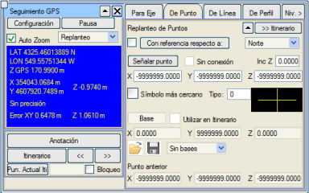 Aplike edilecek noktalar ISTRAM®/ISPOL® harita penceresinde tıklanır, ancak tüm "yakalama" seçeneklerinden yararlanılabilir. Baz istasyonları da benzer şekilde seçilebilir. Aplikasyon için yeni bir nokta seçildiğinde, eski olan "önceki nokta" olur.
ÇİZGİ APLİKASYONU GPS araç çubuğundaki  simgesi aracılığıyla da erişilebilen bu seçenek, haritadaki bir çizgiyi referans alarak, onu veya ona paralel çizgileri aplike etmeyi sağlar. simgesi aracılığıyla da erişilebilen bu seçenek, haritadaki bir çizgiyi referans alarak, onu veya ona paralel çizgileri aplike etmeyi sağlar.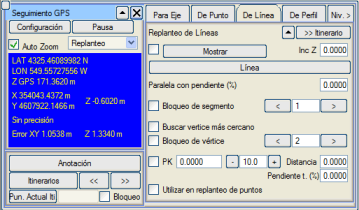
ENKESİT APLİKASYONU GPS araç çubuğundaki  simgesi aracılığıyla da erişilebilen bu seçenek, bir enkesiti referans alarak ve enkesit editörü içindeyken, Eksen için Aplikasyon bölümünde zaten görülen aynı seçenekleri sunar. GPS'e yakalama, enkesit editörü içinde de mevcuttur, bu da çok kullanışlıdır. simgesi aracılığıyla da erişilebilen bu seçenek, bir enkesiti referans alarak ve enkesit editörü içindeyken, Eksen için Aplikasyon bölümünde zaten görülen aynı seçenekleri sunar. GPS'e yakalama, enkesit editörü içinde de mevcuttur, bu da çok kullanışlıdır.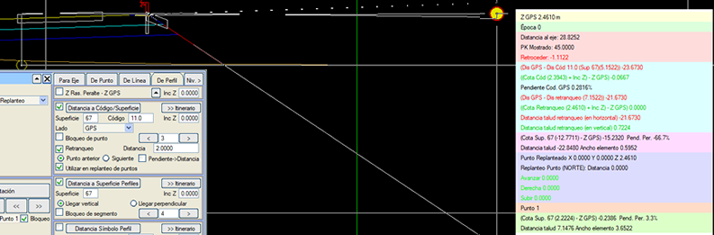 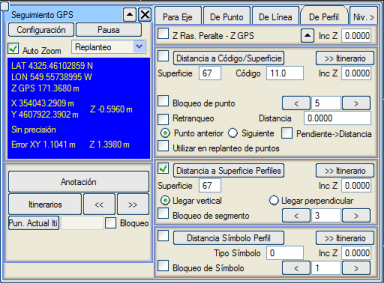
Bir enkesit kodunun geri çekilmesi olarak hesaplanan nokta, Nokta Aplikasyonu menüsünde kullanılmak üzere otomatik olarak aktarılabilir, böylece sistem kullanıcıyı, koordinatları Nokta Aplikasyonu menüsüne girilmiş gibi bulması için yönlendirir. Haritacılık Gözetimsiz Otomatik TOC Yeni menü, Topografyada kullanılan kod sözlüklerini ve komutları destekler. Ayrıca komutlar bir araç çubuğunda mevcuttur. 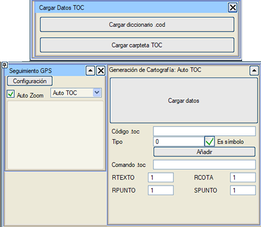
Sözlük yüklü menü
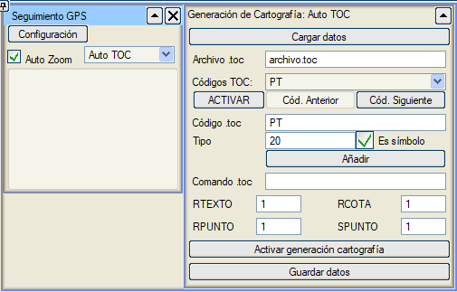 ETKİNLEŞTİR seçeneği: sözlükten yüklenen tüm kodlar arasından o menüde seçilebilecek kodları etkinleştirmeye veya devre dışı bırakmaya olanak tanır.
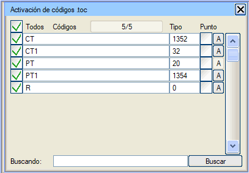Komutlar için mevcut araç çubuğu ile:
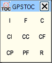 GPS Kullanımı GPS cihazına dikkat sistemi yapılandırıldıktan sonra, bu sistem otonom olarak çalışmaya devam eder ve istenen bilgiyi sürekli olarak gösterir. Bu, GPS'in üç çalışma işlevi için kullanılmasını sağlar: konumlandırma, çizim ve aplikasyon. Bu işlevler, GPS ile bağlantı süresince eş zamanlı olarak yürütülür. Konumlandırma En basit işlevdir, GPS konumunu bildirir, onu yüklü haritada gösterir ve ekran sınırlarının dışına çıkılacağı zaman harita görünümünü güncellemeyle ilgilenir. Çizim  GPS'in
konumu, yakalama destekleyen herhangi bir veri girişi için kullanılabilir.
GPS'e dikkat edilirken, yakalama menüsünde GPS seçeneği belirir. Bu yakalamanın etkinleştirilmesi, yakalama araç çubuğundaki GPS'in
konumu, yakalama destekleyen herhangi bir veri girişi için kullanılabilir.
GPS'e dikkat edilirken, yakalama menüsünde GPS seçeneği belirir. Bu yakalamanın etkinleştirilmesi, yakalama araç çubuğundaki  simgesi aracılığıyla da yapılabilir. Bu şekilde, herhangi bir harita elemanını yerleştirmek için GPS konumu kullanılabilir. simgesi aracılığıyla da yapılabilir. Bu şekilde, herhangi bir harita elemanını yerleştirmek için GPS konumu kullanılabilir.Böylece, bu seçenek etkinleştirildiğinde ve kullanıcıdan imleçle bir nokta tıklaması gereken bir koordinat bilgisi istendiğinde (semboller, etiketler, hücreler ve çizgiler oluşturmak/değiştirmek veya güzergahlar oluşturmak/değiştirmek için), işaretleme cihazıyla (fare veya dokunmatik ekranlarda kalem) tıklandığında, imlecin konumundan bağımsız olarak GPS'in koordinatları alınacaktır. Aplikasyon Daha önce bahsedilen aplikasyon seçenekleri, bir eksen, bir nokta veya bir çizgiyi referans alarak bir projenin durumunu değerlendirmeyi sağlar. Bunları kullanmak için, aplikasyon menülerinde bu seçeneklerin görüntülenmesini seçmek yeterlidir. GPS'in yanında "yankı" olarak ve harita, enkesit ve kırmızı kot çizimlerinde gösterilen bilgiler, projenin teorik modeline ulaşmak için ne kadar ilerlenmesi, kazılması veya doldurulması gerektiğini belirtir. Notlar GPS yankısında gösterilen tüm bilgiler ve bu bilgiyi türetmeyi sağlayan veriler, daha sonra incelenmek üzere bir dosyaya kaydedilebilir. Bu işlevi gerçekleştirmek için Notlar menüsü vardır. 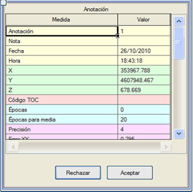Herhangi bir not düğmesine basıldığında (birkaç GPS menüsünde ve araç çubuğunda  simgesiyle mevcuttur),
yankının tüm bilgilerini ve bunları türetmeyi sağlayan verileri gösteren bir menü belirir.
Bu menü, bu bilgiyi gözden geçirmeyi ve geçerli olarak kabul etmeyi veya reddetmeyi sağlar.
Kabul edilmesi durumunda, proje klasöründe kaydedilen ve ticari hesap tablosu programları tarafından doğrudan kullanılabilen AnotacionesGPS.csv adlı bir dosyaya kaydedilir. simgesiyle mevcuttur),
yankının tüm bilgilerini ve bunları türetmeyi sağlayan verileri gösteren bir menü belirir.
Bu menü, bu bilgiyi gözden geçirmeyi ve geçerli olarak kabul etmeyi veya reddetmeyi sağlar.
Kabul edilmesi durumunda, proje klasöründe kaydedilen ve ticari hesap tablosu programları tarafından doğrudan kullanılabilen AnotacionesGPS.csv adlı bir dosyaya kaydedilir.Dosya mevcut değilse otomatik olarak oluşturulur ve zaten mevcutsa, notlar sonuna eklenir. Her not, yapıldığı tarih ve saati taşır. Ayrıca, ISTRAM®/ISPOL® aktif uygulama ise ve içinde herhangi bir metin düzenlenmiyorsa, <Enter> tuşuna basarak da bir not alınabilir. Bu seçenek, klavyesi olmasa bile bu işleve sahip bir düğmesi olan tablet PC'ler için çok kullanışlıdır. Güzergahlar: 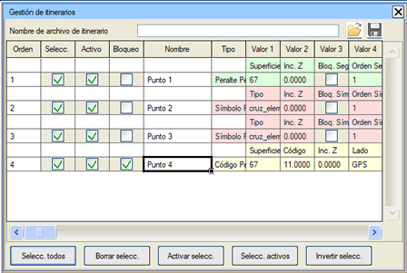Istram'ın GPS yöneticisi bir seçeneğe sahiptir: Güzergahlar. Aplike edilebilir her nokta veya nokta tipi, bir çalışma güzergahını oluşturan bir "yol noktaları" listesine gönderilebilir. Bir KM'ye bağlı olan veya bir çizgi üzerine projeksiyona göreli olan nokta türleri, GPS'in bulunduğu her KM için yeniden hesaplanır. Bu, diğer şeylerin yanı sıra, şantiyedeki her bir sonraki arama noktasını karakterize etmek zorunda kalmamayı, bunun yerine ofiste hazırlanıp onlarla birlikte sahaya çıkılmasını sağlar. Varsayılan olarak Istram en yakın noktaya yönlendirecektir, ancak belirli bir noktaya yönlendirilmesi istenebilir. Güzergahın noktaları etkinleştirilebilir ve devre dışı bırakılabilir ve sıraları değiştirilebilir. Ayrıca, başka bir zaman kullanılmak üzere dosyalara kaydedilebilirler. |

 simgesi aracılığıyla da erişilir. Sadece menüyü önceki resimlerde görüldüğü gibi gösterir. GPS sembolünün sunduğu görünüm ve bilgiyi etkilemez.
simgesi aracılığıyla da erişilir. Sadece menüyü önceki resimlerde görüldüğü gibi gösterir. GPS sembolünün sunduğu görünüm ve bilgiyi etkilemez. ve
ve  düğmeleri de KM'leri ileri ve geri gitmeyi sağlar.
düğmeleri de KM'leri ileri ve geri gitmeyi sağlar.